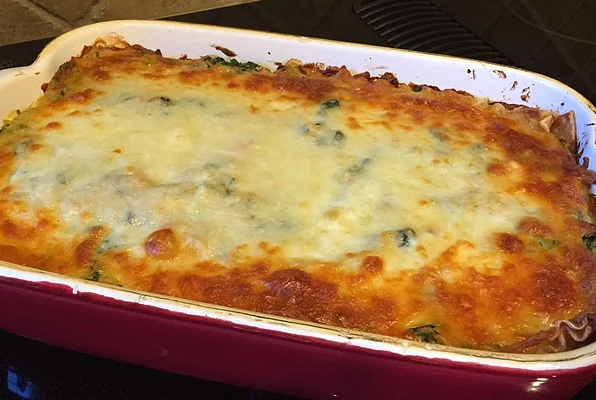

"This is the lasagna html page"

Debbie's Homemade Vegetarian Lasagna
Debbie has created a version of lagna without meat. By utilizing spices and creativity
she allows healtheir consumption of a generational favorite.
A further list of ingredients and Debbie's other recipes can be found at her site.
- Pasta
- Tomato Sauce
- Ricotta
- Spice Mixture
- pepper
- basil
- salt
- italian blend
Steps to make Lasagna!
- layer pasta with sauce and cheese in between
- sprinkle spices between each layer
- Bake at 350 for 30 minutes
- Finish with black pepper and cut into squares